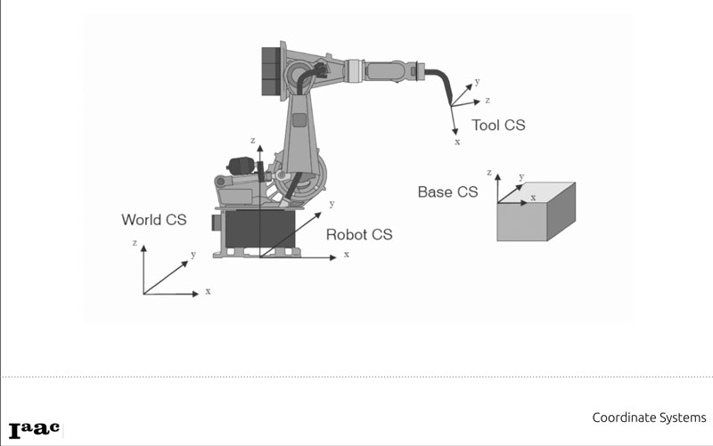
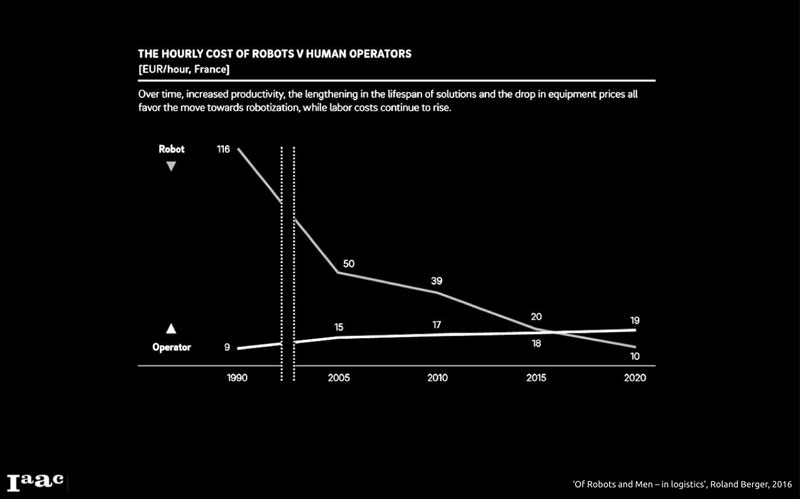
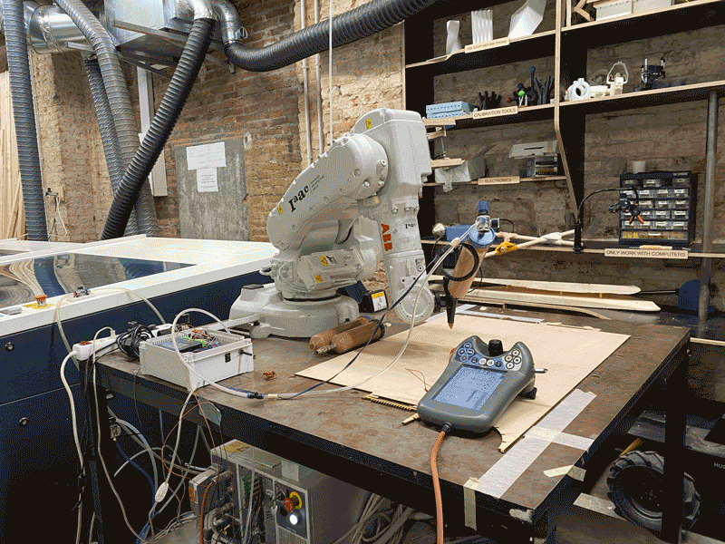
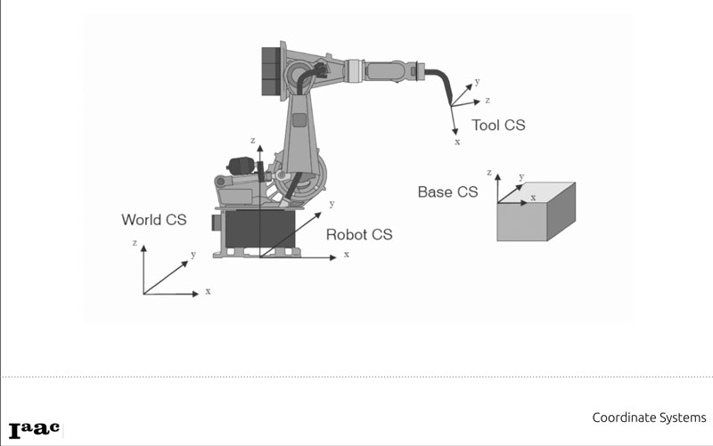
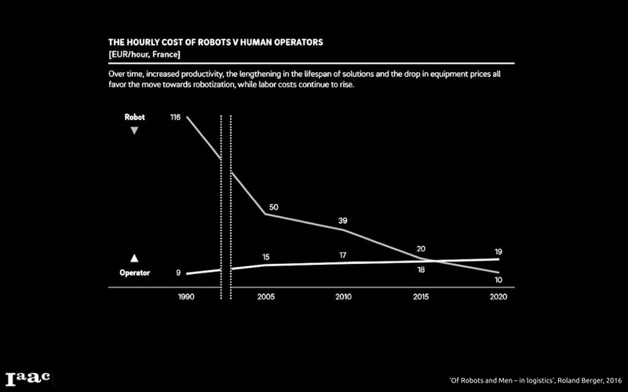
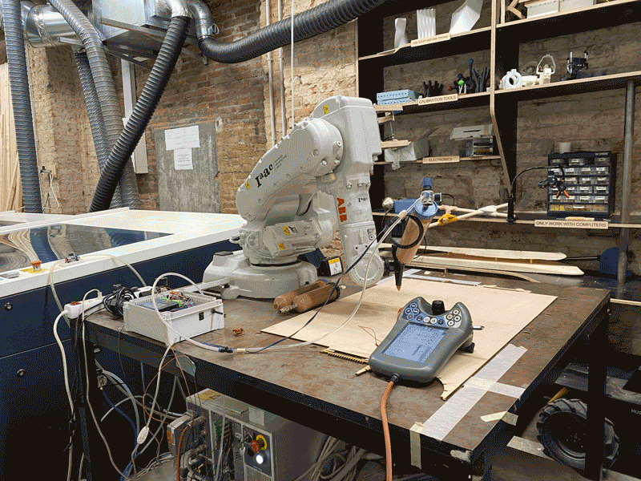

🗓 11 May 2022

Movements: PTP Joint Interpolation ARC LIN AXIS Singularity: when one axis is aligned to another one. Terminology Nagami Design

Assignment: I used the robotic arm to test 3D printing with clay.

Wildcard Week: Robotics
In the wildcard week, we robot is mainly defined by size, maximum reach, and payload. The three main functions are laser cutting, 3D printing, and CNC machine. Robotic arms are mostly 6 axis but can be 5 to 9, depending on the rotation of the surface which could add 3 more additional axis. Locate planes instead of points in space. Parameters are speed, approximation, input/outputs, and repeatability. Approximation is when a point get acknowledged of being reached. Smaller is more accurate. Repeatability refers to the robots ability to repeat the same motion thousands of times, while not offsetting from the first position. Clay printing Mataerial 3D antigravity clay printing robot. Defining 12 origins (world, robot, base, or tools) before starting. You must callibrate the origin again when you mount a tool, depending on the tool.
Movements: PTP Joint Interpolation ARC LIN AXIS Singularity: when one axis is aligned to another one. Terminology Nagami Design

Assignment: I used the robotic arm to test 3D printing with clay.
